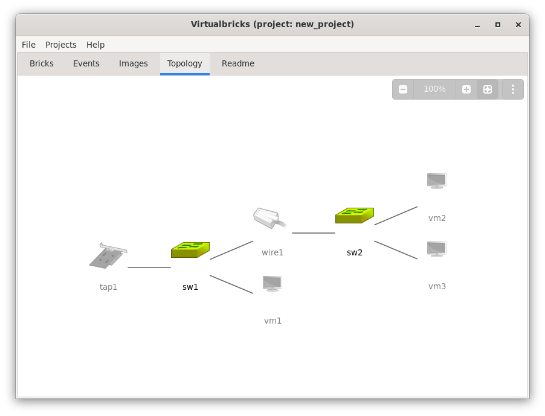
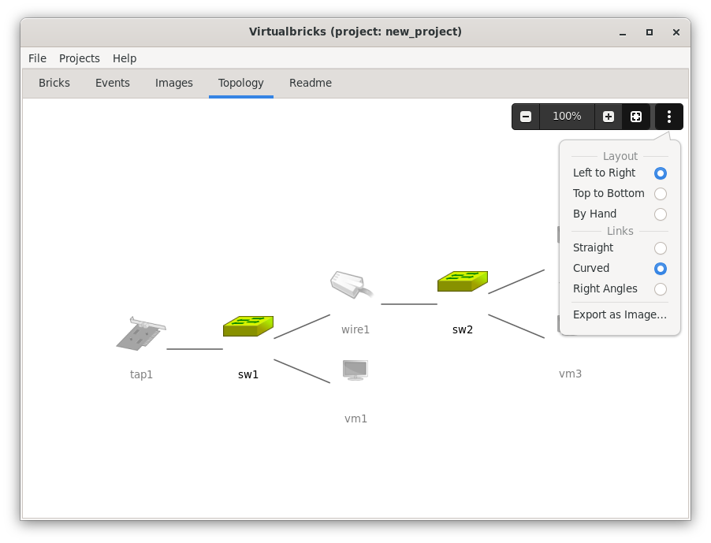

The picture of the lab
The Topology tab draws the bricks of the project and the links between them. Each brick is its icon, with its name under it; a wire is a brick too, between the two bricks it joins. A link goes from a brick to each brick it plugs into: a tap to its switch, a virtual machine to the switch of each network card. Two links between the same two bricks are drawn as one.


A brick that runs is in colour, and a stopped one grey and faded, its
name too. The brick under the pointer lights up, on a disc, and its
tooltip says its name, its kind and its state, as sw1 · Switch · running. The right button opens the
menu of the brick, the same as in the Bricks
tab, and a double click its settings, in the Bricks tab. A project without bricks shows a hint
instead.
The picture follows the project: a brick that comes, goes, connects, starts or stops shows at once.
Zooming
A bar over the top right corner, faded until you point at it, has Zoom Out, the zoom level, Zoom In, Fit All and a menu. The zoom goes from 10% to 400%, a step at a time, and a click on the level goes back to 100%.
Fit All shows the whole lab, never above 100%, and stays on, pressed, until you zoom: as long as it is on, the picture fits again when the lab changes or the window changes size. The tab opens with it on.
After a click on the picture, which gives it the keys:
Ctrl++, Ctrl+-: zoom in and out; Ctrl+0: 100%; F: fit all.
The arrows and Page Up, Page Down move the picture.
With the mouse, Ctrl and the wheel, or a pinch on a touchpad, zoom around the pointer, and dragging the background moves the picture.
Connecting two bricks
Drag a brick onto another, as in the Bricks tab: a line follows the pointer. Over a brick that it can plug into, or that can plug into it, the line ends on that brick, which lights up, and the words under it say what letting go does, as Connect tap1 to sw2. Let go there, and the two connect, as with Connect To in the menu of the brick; let go over another brick, or press Esc, and nothing changes. Near an edge of the tab, the picture scrolls, to reach a brick out of view.
A virtual machine dropped on a switch gets a new network card plugged into it. A wire joins two bricks in two drops: drop the wire on one end, then on the other.
Moving bricks
Drag a brick and let go over free room: the brick stays there. On the way, a faded copy of it at the end of the line shows where it goes. Near the column or the row of another brick, the copy lines up with it, and a thin line shows it.
The first move keeps every other brick where it shows: the lab is laid out by hand from then on, and the project keeps the place of each brick, so the picture stays as you arranged it, after a restart and in an exported archive. A new brick waits in a row under the others until you move it.
The layout
The menu at the end of the bar has the layout, the links and the export.


The Layout places the bricks:
- Left to Right, Top to Bottom
-
Graphviz places the bricks, in columns or in rows, and again after each change: a brick added or connected can move the others. A lab with places loses them, and goes back to Graphviz. Left to Right is the first; the choice holds until you quit, for every project.
- By Hand
-
Each brick stays at its place, as after a move. Choosing it gives every brick the place it has in the picture.
The links
The Links of the menu draw them Straight, Curved or at Right Angles, in every layout; the project keeps the
choice, curved at first, as its setting link_lines. A
straight line can pass behind a brick in its way; Graphviz routes the
curves and the right angles around the bricks. In a lab laid out by hand
it moves no brick to do so, and two bricks too close for a link to pass
between them have their links routed around their icons, across their
names. Where Graphviz can't draw right angles, the links are curved.
Exporting the picture
Export as Image…, in the menu, saves the picture in a file: a PNG image, an SVG image or a PDF document, by the extension of its name; choosing a kind of file in the chooser changes the extension. The picture is the whole lab at 100%, on white, in the colours of a light theme, whatever the zoom and the theme of the tab.
Every brick is in colour, running or not, unless you tick Fade stopped bricks in the chooser: then the stopped ones are grey and faded, as in the tab, and the chooser keeps the box ticked until you quit.
The chooser suggests the name of the project, as new_project.png, in the folder of the project. There
the picture can show in its README, and goes into the exported archives
with the other files of the folder; see Pictures. Export it again after the lab
changes: the file is a copy of the picture of that moment.
See also
Notes on the lab, in Markdown, with pictures.